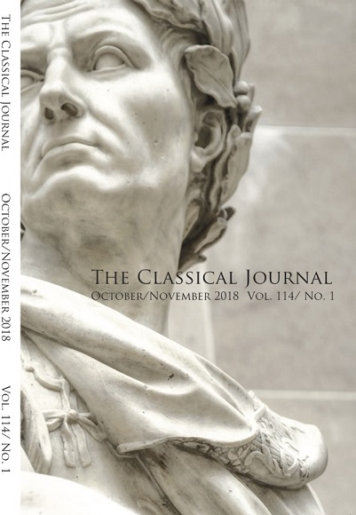
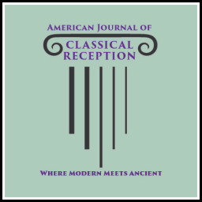
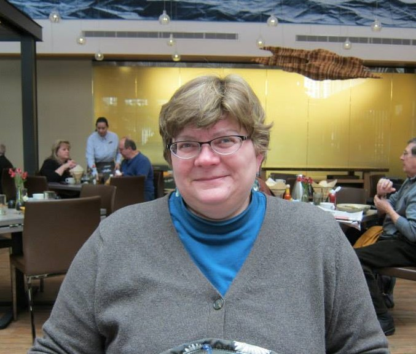

123rd Annual Meeting · March 17 to 20, 2027
Classics meets in Cleveland this spring.
At the Hotel Cleveland, at the invitation of Case Western Reserve University. Proposals for papers, panels, workshops, posters, and round-table discussions on any aspect of the ancient Mediterranean world are welcome.
Since 1905
For everyone who teaches, studies, or loves the ancient world.
The Classical Association of the Middle West and South is an organization for Classics teachers at all levels, undergraduate and graduate students, and anyone else who enjoys learning about the world of classical antiquity. Its region covers 32 U.S. states and 3 Canadian provinces, and it welcomes members from anywhere in the world.
Membership
Find your membership.
Choose what describes you. Dues are for the academic year, July 1 through June 30.
Every member receives
- The Classical Journal and the CAMWS Newsletter
- Full access to the Loeb Classical Library online
- 25% off purchases from Oxford University Press
- 50% off a JSTOR JPASS
- GreekKeys, through the CAMWS institutional membership in SCS
Awards and scholarships
Funding for study, travel, and teaching.
CAMWS offers awards, grants, and scholarships each year. Filter by who you are and see what is open to you, with the annual deadline beside each one.
Publications
Three journals, a newsletter, and a podcast.
Teaching Classical Languages

American Journal of Classical Reception
Also from CAMWS: the Newsletter, three times a year, and CAMWS Podcasts, conversations with members.

Featured CAMWS member
A Roman gravestone turns up in a New Orleans backyard.
“It was like a shiver up my spine.”
Susann Lusnia, an associate professor of classical studies at Tulane University, identified and authenticated a nearly 2,000-year-old grave marker after a homeowner emailed her a picture of it.
Read the story in The New York TimesAnnouncements
News from the association.
A call for input on reimagining CAMWS-Southern Section
Announcing the American Journal of Classical Reception
CAMWSCorps needs editors
Give to CAMWS
No contribution is too small.
Your gift supports the outreach activities of CAMWS, and you may designate it for a specific use: the Teacher Training Initiative, Awards and Scholarships, the James Ruebel Fund for undergraduate travel, the Keely Lake Fund, the Masciantonio Diversity Award Fund, and more.
Make a gift